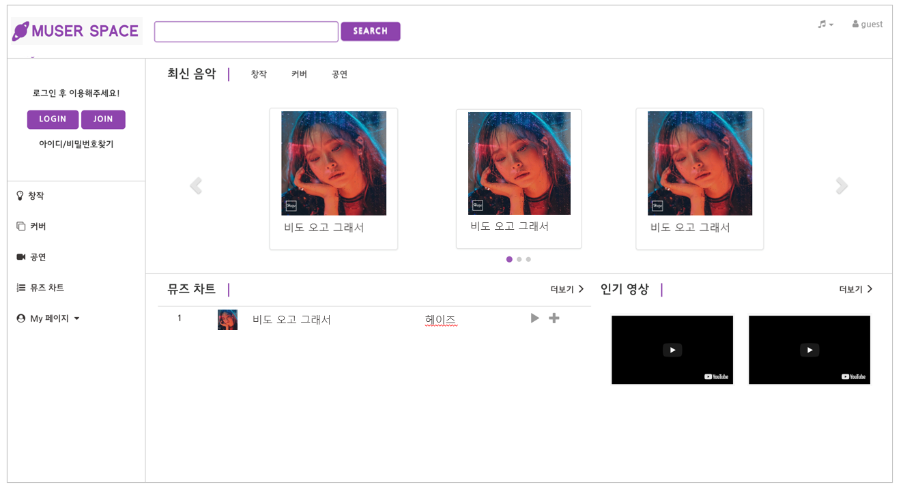

아마추어 음악가를 위한 음원 스트리밍 웹 플랫폼
- 뮤저스페이스 -

소개
| 주제 | 음원/앨범 제작이 어려운 음악가를 위한 음원 스트리밍 웹 플랫폼 |
| 기간 | 2017.07 - 2017.10 (약 3개월) |
| 역할 |
· 글 작성 CRUD 구현 · audio 마크업 커스텀 및 재생 기능 적용 · rails 템플릿 기반 전체 마크업 작업 |
| 주요 기능 |
· 개인 자작곡 및 커버곡 음원 업로드, 스트리밍 제공 · 댓글, 좋아요 기능 · 좋아요 순위 별 음원 목록 노출 |
| 기술 |
· Ruby On Rails 프레임워크 기반 웹 구현 · AWS(EC2) 구축, 배포 · audio plugin 적용 |